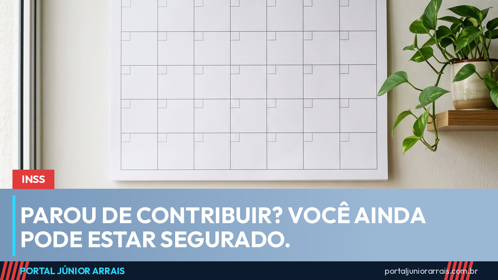

Período de graça: até quando você continua segurado depois de parar de contribuir

Existe uma crença muito difundida e muito errada: a de que, parando de contribuir para o INSS, a pessoa fica desprotegida já no mês seguinte. Não é assim. A lei criou uma janela de proteção chamada período de graça.
Como funciona
Durante o período de graça, a pessoa continua sendo segurada do INSS mesmo sem pagar nada. Se acontecer alguma coisa nesse intervalo — um acidente, uma doença incapacitante, uma gravidez, até mesmo o falecimento —, os benefícios correspondentes ainda podem ser devidos.
Os prazos principais:
- 12 meses — regra geral, para quem deixa de contribuir;
- 24 meses — para quem já tinha mais de 120 contribuições mensais sem ter perdido a qualidade de segurado no meio do caminho;
- mais 12 meses — acrescidos quando há comprovação da situação de desemprego.
Somando, o prazo pode chegar a 36 meses — três anos de proteção sem recolher nada.
Existem ainda regras próprias para algumas situações, como a de quem está recebendo benefício e a de quem está preso.
Por que isso muda tanta coisa
Muita gente deixa de pedir um benefício a que teria direito porque conclui sozinha que "já perdeu tudo" ao parar de contribuir. E, do outro lado, muita gente descobre tarde demais que o prazo havia acabado poucos meses antes do fato.
Vale entender também o que acontece depois: perder a qualidade de segurado não apaga o tempo já contribuído. Aquele tempo continua registrado e conta para a aposentadoria. O que se perde é a proteção imediata contra os riscos.
Cuidado com golpe
Como o assunto é técnico, aparece muita oferta de "regularizar sua situação no INSS" por um valor, e até de "recuperar a qualidade de segurado" mediante pagamento a intermediário. Contribuição previdenciária se recolhe em guia no nome do próprio segurado — não se paga a terceiro por Pix.
Como a conta dos prazos depende do histórico de cada um, vale procurar um profissional de sua confiança para conferir em que situação você está hoje.
Conteúdo informativo — não substitui orientação individualizada sobre o seu caso.